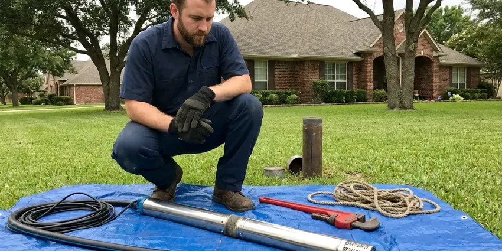

Tankless Water Heater Replacement in Mesa, AZ
Worn-out tankless unit throwing error codes? We replace tankless water heaters across Mesa, AZ with properly sized, scale-protected units that deliver steady hot water.
- Same-Day Replacement Available
- Licensed Gas Line Technicians
- Isolation Valves Installed Standard
- Manufacturer Warranty Registration

Endless Hot Water Starts With One Call in Mesa, AZ.
Tell us your current unit model and we will quote a matched replacement over the phone.
Reliable Tankless Water Heater Replacement for Mesa, AZ Homes
CVR Plumbing replaces failing tankless water heaters with condensing and non-condensing units sized to your home's real flow demand. We check gas supply, venting clearances and water hardness before recommending a model, so the new heater is not starved for fuel or choked by scale.
Our expertise includes:
- Gas line sizing and upsizing for 199,000 BTU tankless units
- Condensing unit installs with PVC venting and condensate neutralizers
- Scale prevention with isolation valves and inline filtration options

Additional Plumbing Replacement Services in Mesa, AZ
When repairs are no longer enough, our replacement services in Mesa, AZ deliver modern, efficient equipment installed right.




Well Pump Replacement near Mesa


Customers
Why Choose CVR Plumbing for Tankless Water Heater Replacement in Mesa, AZ?
A tankless heater is only as good as its gas supply and venting. We measure both before we quote, so your new unit fires at full output instead of shutting down on high demand.
- Right-Sized Units, We calculate gallons per minute and temperature rise for your fixtures instead of guessing from square footage.
- Scale Protection, Every install includes isolation valves so the heat exchanger can be descaled without cutting pipe.
- Clean Venting, We route venting to meet manufacturer clearances from windows, doors and roof edges.
Citywide Coverage
Whether your tankless sits on an exterior wall, in a garage or inside a utility closet, we cover all of Mesa with the same scheduling and pricing. Most replacements are booked within a day or two.
Experienced Team
Our team installs tankless heaters regularly and trains on manufacturer-specific setup, including recirculation programming and altitude settings. That experience shortens install time and prevents callbacks.
Safety-First Approach
Tankless heaters burn a lot of gas at full fire, so we pressure test gas connections and verify meter capacity before lighting the unit. Venting is installed and sealed to prevent carbon monoxide from entering living space.
Trusted Certified Mesa Plumbing Services Professionals
At CVR Plumbing, we take pride in providing licensed, certified plumbing services throughout Mesa, AZ. Backed by leading industry credentials, our experienced plumbers combine technical skill with genuine customer care. Whether it is repair, installation, or maintenance, we follow strict safety and quality standards to deliver lasting results you can trust.
Call Us Now PHCC Plumbing Contractor Recognition
PHCC Plumbing Contractor Recognition Better Business Bureau (BBB) Accreditation
Better Business Bureau (BBB) Accreditation Angi Certified Pro
Angi Certified Pro ISO 9001 Quality Management Certification
ISO 9001 Quality Management CertificationEfficient Tankless Water Heater Replacement Services in Mesa, AZ
Like-for-Like Tankless Swaps in Mesa
When your existing tankless has a cracked heat exchanger or a failed control board that is not worth repairing, a direct replacement is often the fastest fix. We match the new unit to your current gas line, venting type and mounting location whenever possible. Many Rinnai and Navien models share similar footprints, which keeps wall patching to a minimum. We also replace the old service valves if they are corroded or seized. Most like-for-like swaps are finished in four to six hours.

Tank to Tankless Conversions in Mesa, AZ
Converting from a 40 or 50 gallon tank to tankless frees up floor space and ends standby heat loss in a hot garage. The catch is that tankless units usually need a larger gas line, often three quarter inch or bigger, plus new venting. We evaluate your meter size and pipe run before quoting so there are no surprises mid-job. We also cap or reroute the old flue and seal the roof penetration if it is no longer used. Expect a conversion to take a full day.
Condensing Tankless Replacement in Mesa
Condensing tankless units like the Navien NPE series or Rinnai Sensei reach efficiencies above 90 percent by capturing heat from exhaust gases. They vent through inexpensive PVC and produce acidic condensate that must be neutralized and drained properly. We install a neutralizer cartridge and route the condensate line to an approved drain. In Arizona heat, condensing units still save gas because they work year-round on showers, laundry and dishes. We explain the cost difference so you can decide if the efficiency gain is worth it.
Exterior Mount Tankless Units in Mesa, AZ
Many Arizona homes have tankless heaters mounted on an exterior wall with no venting at all, since the unit exhausts directly outside. These units face intense sun and summer heat, which can break down plastic covers and wiring over time. When we replace them, we check the pipe cover, freeze protection settings for higher elevations and the electrical connection. We can add a protective pipe cover kit to shield the water and gas lines. Exterior models are often the simplest swap when the gas line is already sized correctly.
Electric Tankless Water Heater Replacement in Mesa
Whole-house electric tankless heaters draw a large amount of current, often needing two or three dedicated 40 or 50 amp breakers. When an older electric unit fails, we verify your panel capacity and wire gauge before installing a replacement from brands like Stiebel Eltron or EcoSmart. Point-of-use electric units under sinks are a simpler swap and work well for distant bathrooms. We tell you honestly when a gas unit or a heat pump tank would serve your home better. Electric tankless performance depends heavily on incoming water temperature, which is high most of the year in Arizona.
Recirculation Tankless Upgrades in Mesa, AZ
If you are tired of running the tap waiting for hot water, a tankless with a built-in recirculation pump can bring heat to the fixture in seconds. Navien A series and Rinnai units with internal pumps can use a dedicated return line or a crossover valve under the farthest sink. We program schedules so the pump runs only during your morning and evening peaks. That keeps gas use reasonable while saving thousands of gallons of wasted water a year. This upgrade is popular in long single-story ranch homes.
Commercial Tankless Replacement in Mesa
Restaurants, salons and small offices often use multiple tankless units linked together on a rack system. When one or more units fail, we replace them and rebalance the cascade controls so they share the load. We check gas pressure under full demand, since commercial racks can draw more than 600,000 BTU combined. Scheduling is flexible so we can work after hours and keep your business open. We also set up a descaling schedule suited to your water usage.

Emergency Tankless Replacement in Mesa, AZ
A tankless heater that leaks from the heat exchanger or refuses to ignite can leave you with no hot water at all. We offer same-day emergency replacement for common models and can often get a unit installed the day you call. If your exact model is not in stock, we can sometimes do a temporary repair to restore hot water while the replacement ships. We shut off gas and water to stop any leak on arrival. Call (928) 470-9009 anytime your tankless quits.
Tankless Water Heater Replacement Near Me in Mesa, AZ
If you are searching for tankless water heater replacement near me, you want a local plumber who understands Arizona water and gas codes. CVR Plumbing serves Mesa with trucks stocked for tankless installs. We can usually give you a firm quote after a short phone call and a few photos.
Local service matters because tankless problems often show up during the busiest part of your day. Our techs are close by and can diagnose whether a repair or replacement makes more sense. We back every replacement with clear labor coverage and register your manufacturer warranty for you.
CVR Plumbing at a Glance
- Fully licensed plumbing team covering Mesa, AZ
- 24/7 emergency service with same-day scheduling
- Upfront, flat-rate pricing before work begins
- 4.8-star rated by 713+ Arizona customers
Mesa Map
Mesa Information
- Population
- 511,648
- Area codes
- 480/602/623
- Service area
- Mesa and communities within 40 miles
- Nearby
- Gilbert, Chandler, Tempe, Queen Creek
Hard Arizona water builds scale inside tankless heat exchangers quickly, so a properly sized replacement with flush valves protects homes in Mesa, AZ from early failures.
Expert Services
Trust our professionals for reliable CVR Plumbing solutions in Mesa, AZ.
Our Specialized Plumbing Services in Mesa, AZ
At CVR Plumbing, we provide a complete range of plumbing services across Mesa, AZ. From leak detection to full system installations, our team ensures fast, precise, and affordable service for both residential and commercial properties. Explore our core services below:


How Our Tankless Water Heater Replacement Process Works in Mesa, AZ
Replacing a tankless heater takes planning around gas, venting and water. Here is how we keep it simple.
Request a Quote
Call (928) 470-9009 with your current model number and a photo of the install. We give you a ballpark price and schedule a visit.
Size and Inspect
Our tech measures gas line size, meter capacity, venting path and water hardness. We recommend a unit that fits your hot water demand.
Install and Test
We remove the old heater, install the new one with service valves and venting, then test gas pressure and combustion. You get a walkthrough on settings and flushing.
Frequently Asked Questions About Tankless Water Heater Replacement in Mesa
A like-for-like gas tankless replacement typically runs $2,800 to $4,500 installed, depending on the brand and venting. Converting from a tank to tankless often costs $4,000 to $6,500 because of gas line and venting upgrades. We give you a written quote before any work starts.
Yes. Softened or scale-treated water greatly reduces mineral buildup in the heat exchanger. We can install a scale-reduction filter if a full softener is not in your plans.
We install Navien, Rinnai, Noritz, Takagi and Rheem tankless heaters. Each has strengths, and we recommend based on your flow needs, venting options and budget.
A direct swap usually takes four to six hours. A tank to tankless conversion with new gas and venting typically takes a full day.
Most Arizona jurisdictions require a permit for water heater replacement, especially when gas piping or venting changes. We handle permits where they are required.
Most manufacturers offer 10 to 15 years on the heat exchanger and about 5 years on parts for residential use. We add our own labor warranty and register the unit for you.
Frequent error codes, fluctuating temperature, water leaking from inside the cabinet and a unit older than 15 years are common signs. If the heat exchanger is leaking, replacement is usually the better value.
We do not recommend it. Gas line sizing, venting clearances and combustion testing require training, and improper installs can void the warranty or create carbon monoxide hazards.
What People Are Saying About Our Plumbing Experts?

Mark T.
When our office needed drain cleaning, CVR Plumbing provided quick, reliable service. The plumber arrived on time and made sure every drain flowed perfectly before leaving. Very satisfied.
Drain Cleaning · Scottsdale, AZ
James P.
Our commercial plumbing system had a leak under the sink, and CVR Plumbing handled it professionally. The plumbers arrived quickly and restored everything without disruption to our customers.
Commercial Plumbing · Mesa, AZRobert G.
The trenchless sewer replacement saved our front yard. They walked us through the camera inspection footage first so we knew exactly what we were paying for.
Sewer Line Replacement · Gilbert, AZ
Daniel K.
A pipe burst at 11 pm and they actually answered. The plumber showed up within the hour, shut everything down, and had us back to normal the next morning. Could not ask for more.
Emergency Plumbing · San Tan Valley, AZ
Emily R.
I called CVR Plumbing for plumbing repair, and the technician was fast, polite, and thorough. They explained the problem clearly and fixed it the same day. I will definitely hire them again. Highly recommended!
Plumbing Repair · Scottsdale, AZ
Patricia H.
We had a slab leak that two other companies could not find. CVR Plumbing located it in under an hour, explained our options, and the price matched the quote to the dollar.
Slab Leak Repair · Chandler, AZ